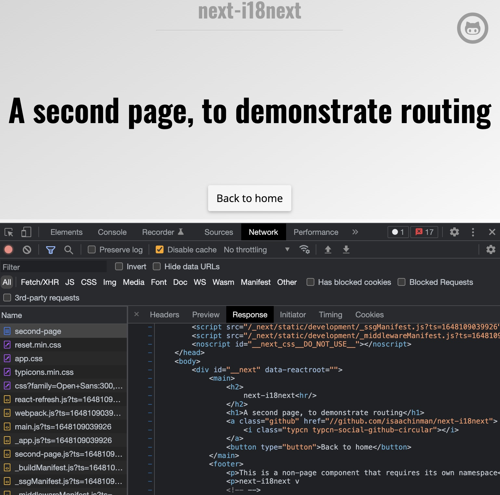
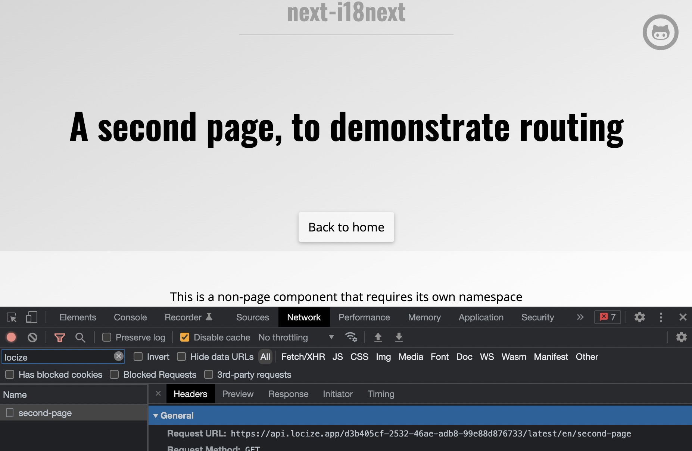
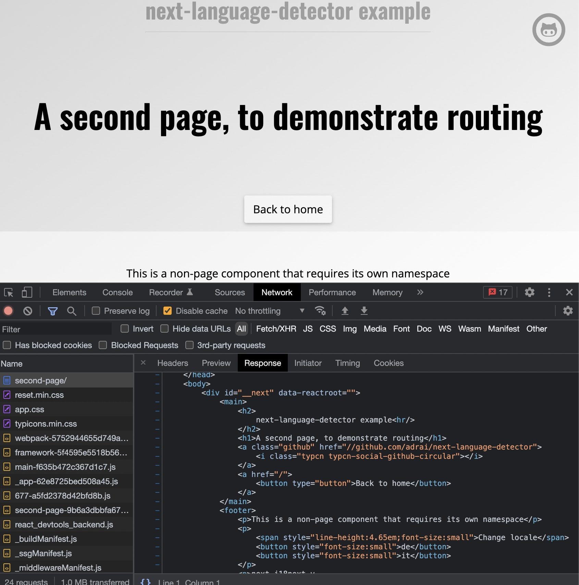
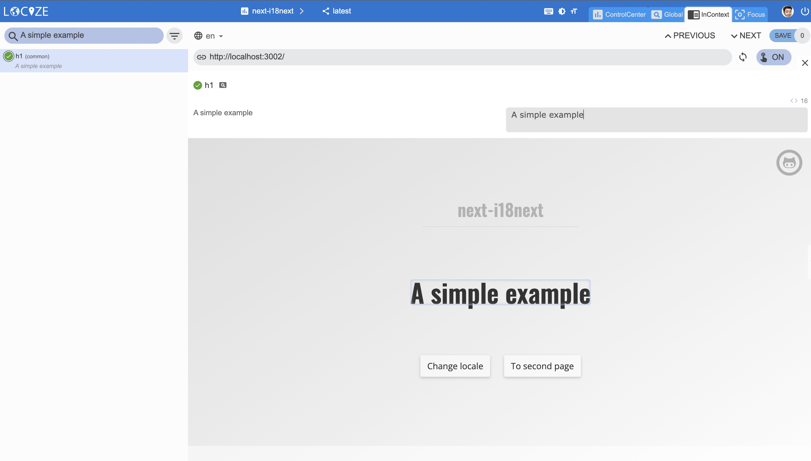

Das Schreiben von Next.js-Code verwischt die Grenzen zwischen Client- und Serverseite.
Der Code wird einmal geschrieben und dann je nach Bedarf als SSG (Static-Site Generation), SSR (Server-Side Rendering) oder CSR (Client-Side Rendering) etc. ausgeführt.
Also auch die Internationalisierung, oder?
Wie kann man Next.js-Apps optimieren, um am besten mit Übersetzungen auf Serverseite und auf Clientseite mit next-i18next zu arbeiten?
Wenn Next.js 13 mit app directory verwendet wir, sich diesen Blogbeitrag an anschauen.
Nehmen wir das Beispiel von next-i18next. Während next-i18next i18next und react-i18next unter der Haube verwendet, müssen Benutzer von next-i18next einfach ihre Übersetzungsinhalte als JSON-Dateien einbinden und müssen sich um nichts weiter kümmern.
Standardmässig gibt es eine next-i18next-Konfiguration, welche die Übersetzungen aus der lokalen Verzeichnisstruktur lädt und die Seiten serverseitig rendert.
Das ist ok, es funktioniert und ist für SEO etc. optimiert, aber wir könnten noch mehr tun.
Was wäre, wenn wir die SEO-optimierte Website mit immer aktuellen Übersetzungen versorgen könnten, ohne dass Sie Ihre App erneut bereitstellen müssen?
Wir werden 2 verschiedene Setups besprechen: Eines mit einem aktiven Backend und ein anderes ein vollständig statisch generiertes.
Das grundlegende Ziel ist immer das gleiche: Wir wollen, dass alles in allen Sprachen SEO-optimiert ist und unseren Nutzern immer die neusten Übersetzungen zur Verfügung stellt.
Beispiel mit einem Backend-Server

Einen Backend-Server zu haben, bedeutet nicht, dass Sie gezwungen sind, Ihren eigenen Server zu betreiben. Es kann auch eine PaaS- oder serverless Lösung sein, wie Vercel oder Netlify usw.
Ok, fangen wir mit dem Default an:
Sie haben die normale next-i18next Einrichtungsanleitung befolgt und jetzt sind Ihre Übersetzungen mehr oder weniger so organisiert:
1 | . |
Lassen Sie uns jetzt eine Verbindung zu einem grossartigen Übersetzungsverwaltungssystem herstellen und Ihre Übersetzungen ausserhalb Ihres Codes verwalten.
Lassen Sie uns die Übersetzungsdateien mit locize synchronisieren. Dies kann bei Bedarf oder auf dem CI-Server oder vor der Bereitstellung der App erfolgen.
Was zu tun ist, um diesen Schritt zu erreichen:
- in locize: Anmeldung unter https://locize.app/register und login
- in locize: ein neues Projekt erstellen
- in locize: Fügen Sie alle Ihre zusätzlichen Sprachen hinzu (dies kann auch über die API erfolgen)
- installiere das locize-cli (
npm i locize-cli)
Benutzen Sie die locize-cli
Verwenden Sie den Befehl locize sync, um Ihr lokales Repository (public/locales) mit dem zu synchronisieren, was auf locize veröffentlicht wurde.
Alternativ können Sie auch den Befehl locize download verwenden, um die veröffentlichten locize-Übersetzungen immer in Ihr lokales Repository (public/locales) herunterzuladen, bevor Sie Ihre App bündeln.
Aber Sie sprachen davon, immer aktuelle Übersetzungen zu haben, ohne Ihre App erneut bereitstellen zu müssen?
Ja, passen wir uns dem an:
Wir werden das i18next-locize-backend-Plugin verwenden, aber nur auf Client-Seite.
Zusammen mit einigen anderen i18next-Abhängigkeiten:
npm install i18next-locize-backend i18next-chained-backend i18next-localstorage-backend
Und wir passen die Datei next-i18next.config.js an:
1 | // next-i18next.config.js |
Das Entfernen von serverSideTranslation zu getStaticProps oder getServerSideProps (abhängig von Ihrem Fall) in den Komponenten auf Seitenebene würde funktionieren, aber das serverseitige HTML nicht korrekt rendern. Die Client-Seite wäre aber in Ordnung.
1 | // |
Dies kann optimiert werden, indem die Funktion getServerSideProps oder getStaticProps beibehalten und die reloadResources-Funktionalität von i18next verwendet wird.
1 | const HomePage = () => { |
Auf diese Weise entfällt auch die ready-Prüfung, da die direkt vom Server bereitgestellten Übersetzungen verwendet werden. Und sobald die Übersetzungen neu geladen werden, werden neue Übersetzungen angezeigt.
Das ist es! Überprüfen wir das Ergebnis:
Das vom Server zurückgegebene HTML sieht korrekt übersetzt aus. Das ist also gut für Suchmaschinen optimiert. 
Und auf der Clientseite werden die aktuellen Übersetzungen direkt vom locize CDN abgerufen. 
üôÄ Das bedeutet, dass Sie Übersetzungen korrigieren k√∂nnen, ohne Ihren Code √§ndern oder Ihre App erneut bereitstellen zu m√ºssen. ü§©
üßë‚Äçüíª Den Code finden Sie hier.
Zusätzlicher Hinweis:
Wenn Sie Caching für Ihre Locize-Version konfiguriert haben, benötigen Sie das i18next-localstorage-backend und i18next-chained-backend-Plugin nicht unbedingt.
1 | // next-i18next.config.js |
Beispiel für eine statische Website
Bei diesem Beispiel brauchen wir nur einen statischen Webserver wie GitHub Pages oder ähnliches.
Es ist ziemlich dasselbe wie bei obigem Beispiel, aber es gibt ein paar Kleinigkeiten, die wir zusätzlich beachten müssen.
Um mit der Static-Site-Generierung (SSG) zu arbeiten, müssen wir den Befehl next export verwenden, aber...
Error: i18n support is not compatible with next export. See here for more info on deploying: https://nextjs.org/docs/deployment
Dies passiert, wenn Sie die Funktion internationalisiertes Routing verwenden und versuchen, einen statischen HTML-Export, indem Sie next export ausführen.
Nun, diese Funktion erfordert einen Node.js-Server oder eine dynamische Logik, die während des Build-Prozesses nicht berechnet werden kann, deshalb ist sie nicht unterstützt.
Es gibt einen dedizierten Artikel mit einer Lösung für dieses Next.js-Problem. Folge zuerst dieser Anleitung!

Gemacht? Dann machen wir hier weiter:
Es ist dieselbe next-i18next.config.js-Konfiguration wie im vorherigen Beispiel:
1 | // next-i18next.config.js |
Erweitern Sie die makeStaticProps-Funktion mit Optionen (emptyI18nStoreStore):
1 | export function makeStaticProps(ns = [], opt = {}) { |
...und entsprechend verwenden:
1 | const getStaticProps = makeStaticProps(['common', 'footer'], { emptyI18nStoreStore: true }) |
Das ist es! Überprüfen wir das Ergebnis:
Das generierte statische HTML sieht korrekt übersetzt aus. Das ist also gut für Suchmaschinen optimiert. 
Und auf der Client-Seite werden die aktuellen Übersetzungen direkt aus dem locize CDN abgerufen.
üôÄ Das bedeutet, dass Sie Übersetzungen korrigieren k√∂nnen, ohne Ihren Code √§ndern oder Ihre App erneut bereitstellen zu m√ºssen. Und ohne einen aktiven Server zu besitzen. ü§©
üßë‚Äçüíª Der Code kann here gefunden werden.
Kontinuierliche Lokalisierung
Da wir jetzt mit as smart Übersetzungsmanagementsystem "verbunden“ sind, können wir versuchen, sein volles Potenzial auszuschöpfen.
fehlende Übersetzungen speichern
Ich möchte, dass neu hinzugefügte Schlüssel im Code automatisch gespeichert werden, um zu lokalisieren.
Dein Wunsch ist mir Befehl!
Erweitern Sie die next-i18next config mit dem locize api-key und setzen Sie saveMissing: true:
1 | // next-i18next.config.js |
Jedes Mal, wenn Sie einen neuen Schlüssel verwenden, wird dieser zu locize gesendet, d.h.:
1 | <div>{t('new.key', 'this will be added automatically')}</div> |
resultiert in locize wie folgt:

üëÄ aber es gibt noch mehr...
Dank des Plugins locize-lastused können Sie in locize, Schlüssel welche verwendet oder nicht mehr verwendet werden, finden und filtern.
Mit Hilfe des Plugins locize können Sie Ihre App im locize InContext Editor verwenden.
Zusätzlich mit Hilfe des Auto-MachineTranslation-Workflows und der Verwendung der saveMissing-Funktionalität werden während der Entwicklung der App nicht nur neue Schlüssel zur automatischen Lokalisierung hinzugefügt, sondern auch automatisch per maschineller Übersetzung in die Zielsprachen übersetzt.
Sehen Sie sich dieses Video an, um zu sehen, wie der Arbeitsablauf der automatischen maschinellen Übersetzung aussieht!
npm install locize-lastused locize
und zwar so:
1 | // next-i18next.config.js |
Automatische maschinelle Übersetzung:

Filter für zuletzt verwendete Übersetzungen:


üì¶ Bereiten wir uns auf die Produktion vor üöÄ
Now, we prepare the app for going to production.
Jetzt bereiten wir die App für den Produktionsstart vor (https://docs.locize.com/guides-tips-and-tricks/going-production).
Erstellen Sie zuerst in locize eine dedizierte Version für die Produktion. Aktivieren Sie die automatische Veröffentlichung für diese Version nicht, sondern veröffentlichen Sie sie manuell oder über die API oder über die CLI. Schliesslich aktivieren Sie auch Cache-Control max-age​ für diese Produktionsversion.
Passen wir die Datei next-i18next.config.js noch einmal an:
1 | // next-i18next.config.js |
Während der Entwicklung werden Sie nun weiterhin fehlende Schlüssel speichern und die lastused Funktionalität nutzen. => npm run dev
Und in der Produktionsumgebung sind saveMissing und lastused deaktiviert, und auch der API-Schlüssel wird nicht verfügbar gemacht. => npm run build && npm start


üßë‚Äçüíª Den vollst√§ndigen Code finden Sie hier.
Sehen Sie sich auch den Teil zur Code-Integration in diesem YouTube-Video.
Es gibt auch ein i18next-Crashkurs-Video.
üéâü•≥ Herzlichen Gl√ºckwunsch üéäüéÅ
Genial! Dank an next-i18next, i18next, react-i18next und locize ist Ihr kontinuierlicher Lokalisierungs-Workflow einsatzbereit.
Wenn Sie also Ihr i18n-Thema auf die nächste Ebene bringen möchten, lohnt es sich, die Übersetzungs-Management Platform - locize auszuprobieren.
Die Gründer von locize sind auch die Schöpfer von i18next. Mit der Nutzung von locize unterstützen Sie also direkt die Zukunft von i18next.